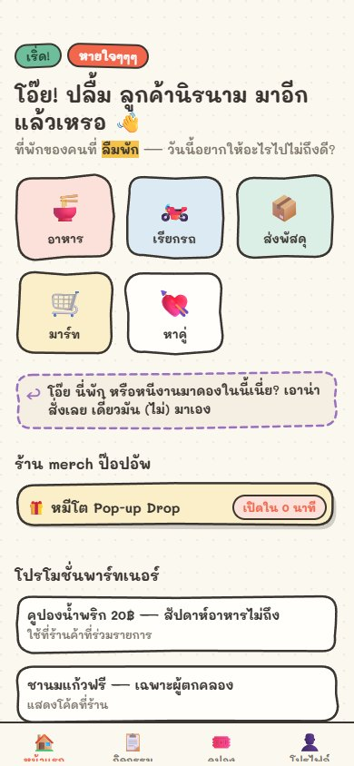
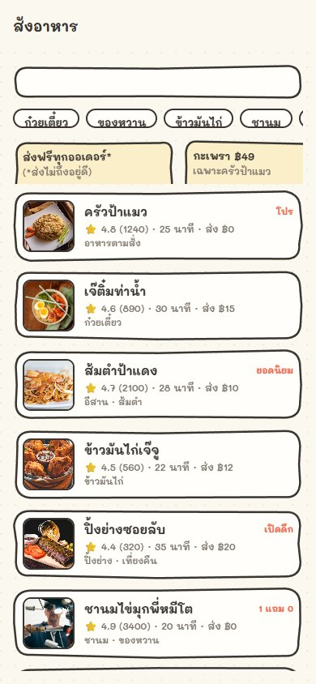
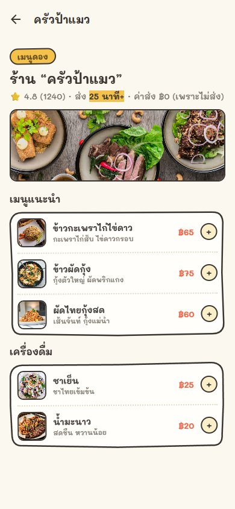

Expo as the delivery shell
Expo Router drives mobile and web from one TypeScript application, with platform-specific map and spot-picker components where the platforms genuinely differ.
A Thai super app where every feature works—except the outcome. I built the joke as a reusable product system: ordering, live tracking, dating, merch, vouchers, and partner campaigns all share real architecture underneath the absurdity.
live production build · interactive
One visual language from discovery to detail.
Captured from the production Vercel build at a 390×844 mobile viewport: main menu → food delivery → restaurant menu.



The comedy is a domain layer, not a pile of screens.
The central product decision was to make “things go wrong” reusable. Food orders, date bookings, and future services can enter the same deterministic route / incident / failure lifecycle while keeping their own feature logic isolated.
One failure lifecycle. Multiple ridiculous products.
Instead of scripting each screen independently, the engine owns progression. A service creates an order-like event, the route progresses deterministically, incidents are selected, and the experience resolves into a shared failure finale.
Food, ride, parcel, mart, or a date becomes an order-like lifecycle.
Path and progress logic create a believable movement model.
Seeded selection makes incidents repeatable and testable.
Shared UI turns domain progress into the live parody experience.
The finale closes the loop and can feed rewards / follow-on features.
Playful surface. Production-minded boundaries.
The project is intentionally unserious in tone, but the implementation keeps infrastructure, domain logic, state, UI, and persistence independently understandable.
Expo Router drives mobile and web from one TypeScript application, with platform-specific map and spot-picker components where the platforms genuinely differ.
Postgres schema, seed data, RPCs, authentication, partner submissions, and sensitive state transitions live behind a structured backend rather than ad-hoc client persistence.
Jest covers deterministic domain behavior and UI/API smoke paths; pgTAP verifies database behavior and security hardening close to Postgres.